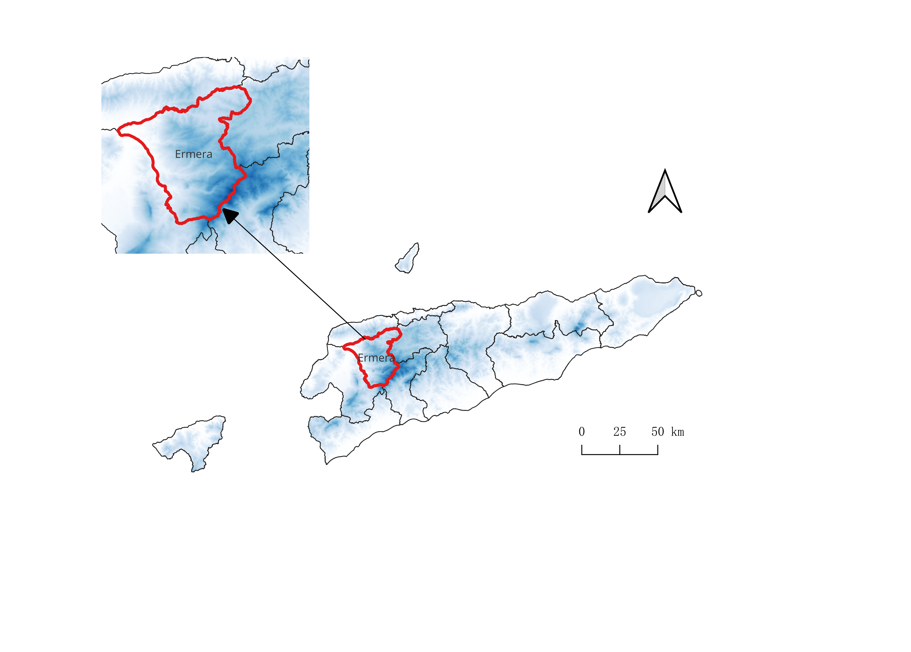

CASA0025-Group Application
1 Intro
1.1 Background
1.1.1 East Timor
1.1.2 Ermera
Ermera位于帝汶岛的中心偏西部，距离首都帝力大约以西50公里，该地区地势多山，拥有多个山谷和山脉，是东帝汶的主要高地之一。这些山脉提供了多样化的微气候，非常适合农业发展，尤其是咖啡种植。该地区的海拔较高，提供了理想的温度和湿度条件，有利于咖啡的生长。这种海拔带来的凉爽气候有助于缓慢咖啡果实的成熟，这对于提升咖啡豆的风味是非常有利的。咖啡种植是Ermera地区的主要经济活动之一，对当地经济有着显著的贡献。大部分居民直接或间接依赖咖啡种植为生。 Ermera是东帝汶西部的一个行政区，以其广泛的咖啡种植园而闻名，特别是其咖啡出口在国际市场上的表现，为该国带来了宝贵的外汇收入和大量的就业机，并提升了东帝汶咖啡的国际声誉。

1.2 Literature review
咖啡种植园受益于与其独特种植需求相的地理和气候条件。咖啡种植对气候非常敏感，尤其是温度和降水等变量(Bilen et al., 2023)，这些变量的变化会显著影响咖啡的品质和产量(Rahn et al., 2018)。理想的咖啡种植区通常有特定的海拔范围和土壤类型，以优化咖啡植物的健康和生产力(González-Orozco et al., 2024)。遮荫管理等适应措施对于减轻温度对咖啡的不利影响至关重要(Rahn et al., 2018)。这种做法不仅有助于温度调节，而且对小气候也有积极的影响(Davis et al., 2012)。例如，阿拉比卡咖啡喜欢高海拔地区，那里的温度较低，而罗布斯塔咖啡则在低海拔地区生长(González-Orozco et al., 2024)。
研究预测，由于气候变化，适合种植咖啡的地区会减少，如果不采取适应措施，预计会对产量产生重大影响(Camargo, 2010; Bunn et al., 2015)。开发耐旱和耐温的咖啡品种也被视为应对全球变暖和气候变化负面影响的关键适应策略(Camargo, 2010)。咖啡种植区的地理和海拔变化是应对气候变化的必要条件，高海拔地区适宜的咖啡种植区可能会增加(Camargo, 2010)。利用人工智能和遥感促进的精准农业等先进农业技术，可以优化水和农药等投入，从而提高产量和可持续性(Oliveira et al., 2021)。
2 Aim
2.1 Research question
2.2 User
3 Signification and Innovation
4 Method
4.1 Approach
4.2 Data
5 Google Earth Engine
5.1 Data pre-processing
云量：1%
波段选择
A) NDVI>0.2
目的：有植被
数据集：LANDSAT/LC08/C02/T1_L2: USGS Landsat 8 Collection 2 Tier 1 Raw Scenes
B）NDWI<0.3
目的：排出河流类水体
数据集：LANDSAT/LC08/C02/T1_L2: USGS Landsat 8 Collection 2 Tier 1 Raw Scenes